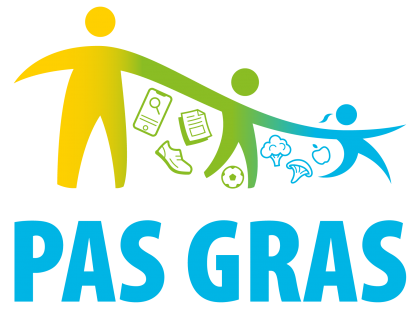

Participação no estudo
Questionários
Selecione o percurso adequado. Os formulários abrem nos respetivos serviços Microsoft Forms e Tally.
Os dados introduzidos nos questionários são tratados nas plataformas onde estão alojados. Consulte a informação de consentimento de cada formulário.